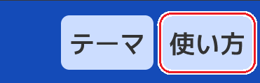

必要なファイルを読み込んでいます...
使い方
- 2枚の画像が出現します。
-
出現した画像の下にテキストエリアがありますので、次世代に求めるものを入力してください。
- 文章は読点や改行、()で区切られます。
- 1文に趣旨は1つまでにすると、混乱を招きにくくなります。そのため、「だけど」「しかし」などは避け、別の文にすることを推奨します。
- 平易な語彙を使うと、文章を汲み取ってもらえやすくなります。
- 出力に言及。例：「右が好き」「左は嫌い」など。
- 好き嫌い。例：「クールで好き」「ちかちかするのは嫌」など。
- 欲しいポイント。例：「もっとさわやかな感じが良い」など。
- 入力が完了したら、右の「決定」ボタンをクリックしてください。
- しばらく待つと、次世代の画像と新しい入力欄が出現します。
- この流れを何回か繰り返してみましょう。
-
なにかが閃いたら、書き留めてみましょう。
図形をﾈｺﾁｬﾝに置き換えたり、配置を調整してみたり、...あなた次第でいくらでも化けます。

入力について
入力例
この画面は、右上の「使い方」ボタンでいつでも切り替えることができます。

おまけ機能
- 「テーマ」：ライトテーマとダークテーマを切り替えることができます。
BIGAN とは?
卒業研究『二個体比較と自然言語での評価を用いたIGAによる背景画像生成システム』にて作成したシステムそのものを指します。
ロゴマーク
当システムで生成する模様の構成要素である図形を散りばめて文字のようにしてみました。

名前
当システムの略称として使用していたもので、命名時の名称「自然言語処理を取り入れた対話型遺伝的アルゴリズムによる背景メーカー」の頭文字をとってこの名前となりました。「審美眼」の「美眼」とも掛けています。
最終更新：2024 Dec.8